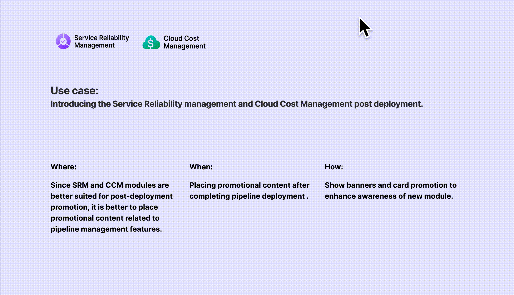
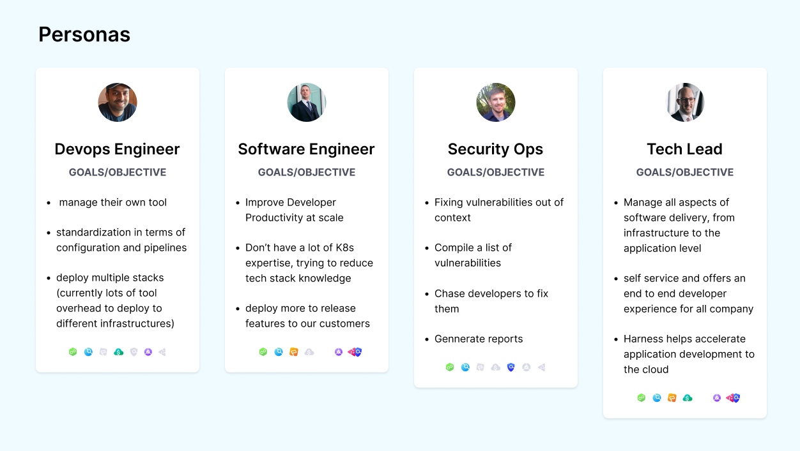
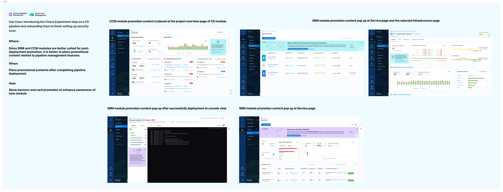

Harness is an intelligent software delivery platform that has been successful in acquiring hundreds of mid-market and enterprise customers through SLG motion. With the trend shifting towards SMB self-service purchases, Harness launched a PLG motion to further support product growth.
Despite 80% of users choosing the CI/CD module after sign-up, other modules like Cloud Cost Management, Service Reliability Management, and Security Testing had activation rates below 5%. This indicated a lack of platform-level growth strategy for promoting modules with lower activation rates.
As a platform-level UX designer responsible for driving PLG motion, I took a holistic view of all modules and identified opportunities to promote them. With an ambitious activation goal of 35% for each module, I collaborated closely with module designers to identify touchpoints in the user journey where each module could be introduced and activated along the pipeline. By fostering collaboration between different teams, I helped drive sustained growth for the platform.
My design challenge was balancing growth and user experience in PLG motions. We wanted to achieve growth and profitability through strategies like freemium models, while ensuring a positive and engaging user experience. I needed to figure out when, where, what, and how to introduce each module to let users gain value from them.
A cross-functional growth strategy delivered concrete improvements in module adoption, onboarding efficiency, and team collaboration culture.
"Users are more likely to try new modules after successful deployment. Promoting modules at moments of task completion — not failure — is the most effective PLG trigger."
Two complementary strategies guided our growth design: using the CI/CD pipeline as the central hub to introduce all other modules, and fostering a collaborative culture that creates viral loops within teams.
We focused on using the CI/CD pipeline as the central hub for all DevOps activities. Since 80% of users start here, it was the highest-leverage touchpoint to introduce adjacent modules at moments of maximum relevance — after a successful deployment, during a security scan, or when a cost anomaly appears.
Continuous Integration and Continuous Deployment demands coordination among diverse roles and teams to achieve smooth code integration and deployment. Proactively encouraging collaboration at the right time — rather than when something goes wrong — can unlock the value of related modules and create organic growth loops through team invitations and shared pipelines.

To foster a culture of collaboration with the CI/CD pipeline as the central hub, we conducted experiments to simplify the sharing process and redesigned the platform onboarding landing page using the JBD framework. Task-based options reduce the complexity of selecting from more than 10 modules, enabling users to easily discover and activate the potential of all available modules.

We explored multiple interaction patterns for cross-module promotion, testing each for adoption lift and experience quality.





A four-stage process that moved from understanding the activation gap, to mapping user journeys, running growth experiments, and validating through A/B testing.
The design problem was clear: despite 80% of users choosing the CI/CD module after sign-up, other modules had activation rates below 5%. This indicated a lack of platform-level growth strategy. To engage all stakeholders and optimize activation funnels for each module, I mapped out the workflow with typical personas from sign-up to the first pipeline run — identifying touchpoints where other modules could be introduced.



One focal point of debate among stakeholders was about the growth strategy: funnel-based or loop-based? I used an experiment framework to validate whether the combination of both could work for increasing activation of designated modules. One area focused on leveraging CI/CD modules to onboard users and promote relevant modules. Another focused on encouraging users to share after they gained value from the products.

Running iterative experiments across the platform to test cross-module promotion patterns at key workflow moments — first-time project landing, chaos workflow integration, and SRM + CCM combined promotion post-deployment.



To validate whether the growth strategy with promotion content could increase module awareness and ultimately improve conversion rate, I conducted A/B tests for four typical use cases, while tracking adoption rates of each new module to measure whether the collaborative prompts worked.


Based on A/B test results, all types of promotional content improved conversion rates, with varying effects: